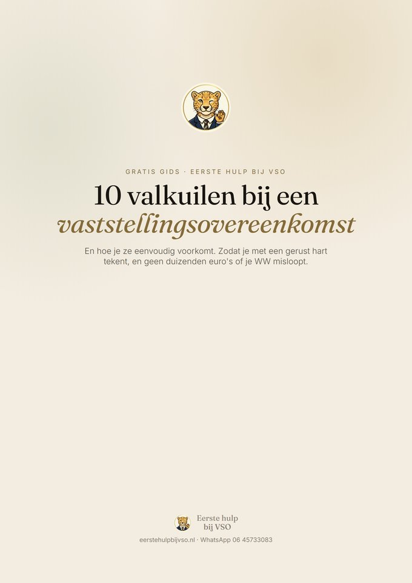

Onverwacht een vaststellingsovereenkomst gekregen?
Teken niets.
Adem.
Wij regelen het.
Het was een dag als alle andere, tot dat ene gesprek. En nu ligt er een document dat je hele toekomst lijkt te bepalen. Je hart bonkt, je hoofd zit vol vragen. Haal eerst even adem, want je hoeft vandaag helemaal niets te tekenen. Wij gaan naast je staan, koppelen je aan de juiste specialist en onderhandelen een regeling die jouw uitkering veiligstelt én zorgt voor een zo sterk mogelijke financiële overbrugging. Jij zet pas je handtekening als alles echt goed voelt.
💛 En voor elke klant doneren we €33 aan een goed doel dat jij kiest →
Nooit onverwachte kosten
Waar mogelijk draagt de werkgever onze kosten. We bespreken het altijd vooraf, zodat je precies weet waar je aan toe bent.
Je uitkering blijft veilig
Je tekent pas als je WW volledig is veiliggesteld.
Je hoeft niet direct te tekenen
De wet geeft je bedenktijd. Niemand kan je dwingen nu te tekenen.
Meer weten? Wat is een VSO? · Transitievergoeding · Alle situaties · Bereken je vergoeding
We snappen het
Eén gesprek en je hele
wereld staat op z'n kop.
Vanochtend hoorde je er nog helemaal bij. Nu staar je naar een document vol juridische taal, met een deadline die op je drukt en honderd vragen die door je hoofd spoken. Krijg ik nog een uitkering? Is dit bedrag wel eerlijk? Mag ik hier eigenlijk over onderhandelen? En wat gebeurt er als ik nee zeg?
Je hoeft die vragen niet in je eentje te beantwoorden, en je hoeft vandaag echt niets te beslissen. Vanaf hier nemen wij het rustig van je over.
"Twee jaar geleden overkwam het mij zelf. Er lag ineens een VSO op tafel en ik wist niet waar ik moest beginnen. Ik schakelde een advocaat in van bijna € 5.000, kosten die ik uiteindelijk volledig op mijn werkgever kon verhalen. Op mijn laatste dag leverde ik mijn laptop in, samen met honderd collega's die precies hetzelfde meemaakten. De meesten van hen tekenden zonder te weten wat ze weggaven.
Dat gevoel laat me nooit meer los. Daarom bestaat Eerste hulp bij VSO, zodat niemand die klap ooit nog alleen hoeft op te vangen."
Hoe het werkt
In drie stappen van paniek
naar een goede deal.
Deel je situatie
Upload je VSO of vertel kort wat er speelt. Binnen 15 minuten heb je een echte specialist aan de lijn die je geruststelt en de eerste vragen beantwoordt.
Wij analyseren & koppelen
We lezen je overeenkomst woord voor woord, van de vergoeding tot de bedenktermijn en alle kleine lettertjes waar het zo vaak misgaat. Daarna koppelen we je aan een specialist die jouw sector door en door kent.
Wij onderhandelen, jij tekent gerust
Je specialist haalt eruit wat erin zit en regelt dat de werkgever de kosten draagt. Jij tekent pas als de deal écht goed en veilig is.
Tip: bereid je goed voor
Verzamel alvast alles wat jouw positie kan versterken. Denk aan stukken die laten zien dat je werkgever zich niet als goed werkgever heeft gedragen, niet aan zijn re-integratieverplichtingen heeft voldaan, of zelfs verwijtbaar heeft gehandeld. Hoe meer wij weten, hoe sterker we voor je kunnen onderhandelen.
Onze zekerheden
Beloftes waar je ons aan
mag houden.
Vergoeding van juridische kosten
Werkgevers stellen bij een vaststellingsovereenkomst vaak een budget van € 750 tot € 1.000 beschikbaar voor juridische bijstand. Is dat nog niet afgesproken? Dan onderhandelen wij hierover. Zo hoef je de kosten in veel gevallen niet zelf te dragen.
Je uitkering staat voorop
De angst om je uitkering te verliezen houdt je 's nachts wakker. Wij controleren precies de punten die het verschil maken, zodat jij pas tekent als je WW helemaal veilig is gesteld.
Binnen 15 minuten een mens
Paniek slaat 's avonds toe, niet tijdens kantooruren. Daarom staan we ook 's avonds en in het weekend voor je klaar, snel en kalm en zonder wachtrij.
Specialisten per sector
Iemand die jouw
vakgebied kent.
Een VSO is juridisch hetzelfde, maar verschilt in de praktijk per sector. In de zorg is het anders dan in de bouw, consultancy, financiële sector, overheid of IT. Cao's, sociale plannen en bovenwettelijke regelingen maken vaak een groot verschil. Daarom koppelen we je aan een specialist die jouw sector door en door kent.
Gratis hulpmiddelen
Ontdek in twee minuten
waar je staat.
Nog voordat je met ons praat, kun je zelf al veel helder krijgen: waar je financieel recht op hebt, of je uitkering veilig is, hoeveel bedenktijd je nog hebt en of je onder druk wordt gezet. Gratis, en zonder verplichtingen.
Transitievergoeding berekenen
Zie direct waar je ongeveer recht op hebt. Bij een vaststellingsovereenkomst is dat je startpunt, niet je plafond.
Is jouw VSO WW-veilig?
Vijf korte vragen en je weet meteen of je uitkering veilig is, met een duidelijke uitslag in stoplichtkleuren.
Hoeveel bedenktijd heb je nog?
Al getekend? Zie precies tot wanneer je nog kosteloos kunt terugkomen op je handtekening.
Wat is mijn VSO waard?
Vergelijk je aangeboden vergoeding met de wettelijke bodem en zie of er meer in zit.
Word je onder druk gezet?
Vink aan wat je werkgever doet en zie meteen waarom een deadline of tekenbonus je rechten niet verandert.
Alle hulpmiddelen
Bekijk alle gratis rekentools en checks bij elkaar, en de gratis gids met de tien valkuilen.

Gratis gids · PDF
Ken de 10 valkuilen
vóór je tekent.
De meeste mensen tekenen te snel, en missen daardoor duizenden euro's of hun WW. In deze gratis gids staan de tien meest gemaakte fouten overzichtelijk op een rij, elk met een concrete tip. Ontvang 'm als handige PDF via WhatsApp.
Waar we voor staan
Kwaliteit. Alleen specialisten die we zonder twijfel zelf zouden inschakelen.
Rust. Jij hoeft niets uit te zoeken, wij ontzorgen je volledig.
Eerlijkheid. Heldere taal, vaste prijzen en nooit verrassingen achteraf.
Altijd aan jouw kant. Wij werken voor jou, nooit voor de werkgever.
Over ons
Ontstaan uit
eigen ervaring.
Eerste hulp bij VSO is opgericht door mensen die zélf aan de verkeerde kant van een reorganisatie stonden. We zagen van dichtbij hoe collega's uit pure paniek tekenden wat ze beter nooit hadden getekend.
Wij weten hoe het voelt, en we weten wat er juridisch mogelijk is. Die twee dingen brengen we samen, zodat jij straks met een gerust hart je handtekening zet.
Veelgestelde vragen
Goed om te weten.
Nee. Je hebt na ondertekening zelfs nog een wettelijke bedenktermijn van 14 dagen (21 dagen als die termijn niet in de overeenkomst staat). Laat je nooit onder druk zetten om ter plekke te tekenen, want daar is juridisch geen enkele reden voor.
Vaak niets. Werkgevers stellen bij een vaststellingsovereenkomst vaak een budget van € 750 tot € 1.000 beschikbaar voor juridische bijstand. Is dat nog niet afgesproken, dan onderhandelen wij hierover. Zo hoef je de kosten in veel gevallen niet zelf te dragen, en weet je vooraf altijd waar je aan toe bent.
Dat is precies waar wij scherp op zijn. Een VSO moet duidelijk maken dat het initiatief bij de werkgever lag, op neutrale gronden en zonder verwijt aan jou, met een einddatum die de fictieve opzegtermijn respecteert. Je tekent pas als je WW veilig is gesteld.
Wat past bij jouw situatie. Voor de meeste VSO-onderhandelingen volstaat een gespecialiseerde arbeidsrechtjurist uitstekend; bij complexe of principiële zaken schakelen we een advocaat in. In alle gevallen kies je iemand met bewezen ervaring in jouw sector.
Wees hier extra voorzichtig: tekenen tijdens ziekte kan zowel je Ziektewet- als WW-rechten raken. Dit is bij uitstek een situatie waarin je éérst met ons moet overleggen. We beoordelen gratis of het in jouw geval verantwoord is.
Een nieuw begin
Jouw afscheid, iemands nieuwe begin.
Voor elke klant die we helpen doneren we €33 aan een goed doel, en jij kiest welk. Het kost jou niets: het komt volledig uit onze eigen opbrengst.
Je staat er niet
alleen voor.
Stuur ons een appje en vertel kort wat er speelt. Binnen 15 minuten heb je een specialist aan de lijn die je geruststelt. Gratis, vrijblijvend en zonder dat je vandaag iets hoeft te beslissen.
Stuur ons een WhatsApp